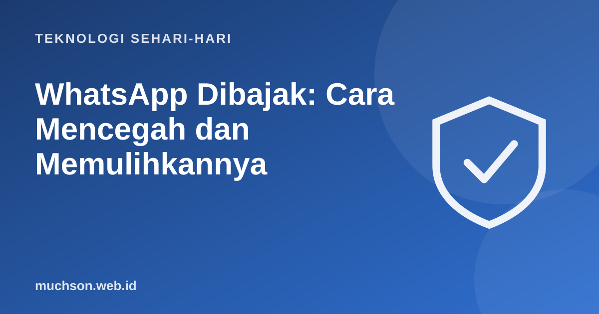

Beranda › Artikel › Teknologi Sehari-hari
Teknologi Sehari-hariWhatsApp Dibajak: Cara Mencegah dan Memulihkannya
Teman Anda tiba-tiba mengirim pesan meminta pinjaman uang, padahal itu bukan dia. Akunnya dibajak. Pembajakan akun WhatsApp sangat sering terjadi di Indonesia, dan hampir selalu berawal dari satu hal: kode verifikasi 6 digit yang diberikan kepada orang lain. Berikut cara mencegah dan memulihkannya.

Cara pembajak mengambil alih akun
WhatsApp terikat pada nomor telepon. Saat seseorang memasang WhatsApp dengan nomor Anda di HP lain, WhatsApp mengirim kode verifikasi 6 digit lewat SMS atau telepon ke nomor Anda. Siapa pun yang memegang kode itu bisa memindahkan akun ke HP-nya. Karena itu, hampir semua modus pembajakan berujung pada satu tujuan: membuat Anda menyerahkan kode tersebut.
| Modus | Kalimat yang sering dipakai |
|---|---|
| Salah kirim kode | "Maaf, kode saya terkirim ke nomor Anda, boleh dikirim balik?" |
| Teman dibajak lebih dulu | Akun teman yang sudah dibajak meminta "tolong kirim kode yang masuk" |
| Pura-pura kurir atau CS | "Untuk konfirmasi paket, sebutkan kode yang kami kirim" |
| Undian atau hadiah | "Selamat Anda menang, verifikasi dengan kode yang masuk" |
| File APK palsu | Undangan, tagihan, atau resi berupa file .apk yang bisa membaca SMS |
Kode verifikasi WhatsApp tidak pernah perlu diberikan kepada siapa pun, termasuk teman, keluarga, kurir, atau yang mengaku dari WhatsApp. Siapa pun yang memintanya hampir pasti penipu.
Pencegahan: aktifkan verifikasi dua langkah
Verifikasi dua langkah menambahkan PIN 6 digit buatan Anda. Meski pelaku berhasil mendapat kode SMS, ia tetap butuh PIN ini untuk masuk.
- Buka WhatsApp → Setelan → Akun → Verifikasi dua langkah.
- Ketuk Aktifkan, lalu buat PIN 6 digit yang tidak mudah ditebak (bukan tanggal lahir).
- Masukkan alamat email untuk pemulihan bila lupa PIN. Ketik dengan teliti karena tidak diverifikasi saat itu.
- Simpan PIN di tempat aman, misalnya pengelola kata sandi.
Langkah darurat bila akun sudah dibajak
- Masuk lagi ke WhatsApp dengan nomor Anda di HP Anda dan verifikasi dengan kode SMS. Ini akan mengeluarkan pelaku dari akun, karena satu nomor hanya bisa aktif di satu HP utama.
- Bila diminta PIN verifikasi dua langkah yang dibuat pelaku, Anda mungkin harus menunggu masa tunggu tertentu sebelum bisa masuk tanpa PIN. Tetap lakukan langkah berikutnya.
- Kabari kontak lewat media sosial, SMS, atau akun lain bahwa WhatsApp Anda dibajak dan jangan mentransfer uang.
- Hubungi WhatsApp lewat menu bantuan atau email dukungan untuk melaporkan akun dibajak.
- Periksa perangkat tertaut dan keluarkan semua sesi yang tidak dikenal setelah berhasil masuk.
- Aktifkan verifikasi dua langkah dengan PIN Anda sendiri.
- Bila ada korban yang mentransfer uang, simpan bukti dan laporkan rekening pelaku (lihat artikel tentang melapor penipuan online).
Pesan yang sudah dikirim pelaku tidak bisa dibatalkan dari HP Anda. Karena itu langkah "kabari kontak" sangat penting dilakukan secepatnya.
Saat teman meminta uang lewat WhatsApp
Tanya jawab
Bagaimana cara WhatsApp bisa dibajak?
Bagaimana memulihkan WhatsApp yang dibajak?
Apa itu verifikasi dua langkah WhatsApp?
Apakah pelaku bisa membaca chat lama?
Sumber dan bacaan lanjut
- WhatsApp Help Center: keamanan dan verifikasi dua langkah
- WhatsApp: fitur keamanan
- OJK Indonesia Anti-Scam Centre